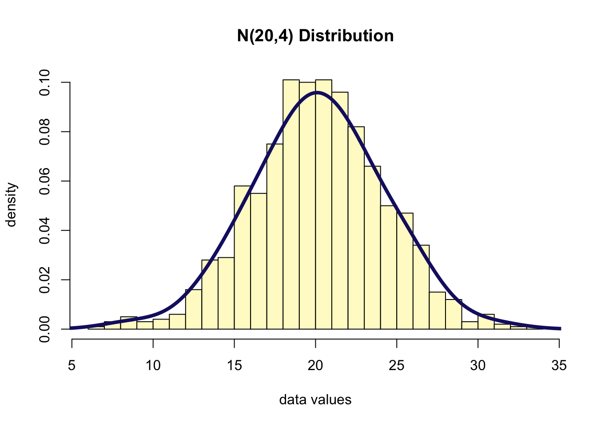
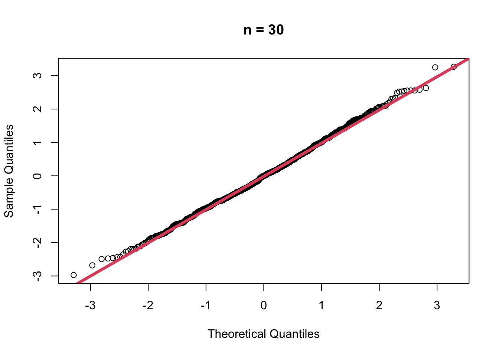

1. Review of Normal Distribution
- The standard normal probability density function (PDF) is:
\[ f_{X}(x)=\frac{1}{\sqrt{2 \pi \sigma^{2}}} e^{-\frac{(x-\mu)^{2}}{2 \sigma^{2}}} \quad-\infty<x<\infty \]
- The plot of a standard normal probability density function (PDF) is:
curve(dnorm, from=-4, to=4, ylab="PDF", main="PDF of a standard normal", lwd=4, col=2)1.1 Cumulative Distribution Function (CDF)
- The cumulative distribution function is defined as the probability that a random variable is less or equal than a certain number.
\[ F_{X}(x)=\operatorname{Pr}(X \leq x) \]
- Note the relation between the CDF and the PDF
\[ F_{X}(x)=\int_{X \leq x} f_{X}(x) d x \]
- The plot of a standard normal cumulative density function (CDF) is:
curve(qnorm, from=0, to=1, ylab="CDF", main="CDF of a standard normal", lwd=4, col=2)1.2 Expected Value and Variance of the normal distribution
- The expected value of the normal distribution is
\[ E[X]=\mu \]
- and its variance is
\[ \operatorname{Var}(X)=\sigma^{2} \]
- There are an infinite number of differnt normal distributions.
- However, all normal distributions can be transformed to a standard
normal distribution.
- Suppose \(Y~N(\mu, \sigma)\).
- Then if for each value of \(Y\), we subtract the mean and divide by the standard deviation.
- The resulting distribution is a standard normal distribution.
- Specifically, a standard normal is
\[ Z=\frac{Y-\mu}{\sigma} \]
- Then \(Z~N(0, 1)\).
1.3 Example: Converting to a standard normal
- Suppose that \(Y~N(20, 4)\)
- Suppose we take a random sample of size 1000 from this distribution
y <- rnorm(1000, 20, 4)
hist(y, freq = F, col = "lemonchiffon",
xlab = "data values",
breaks = 30,
ylab = "density",
main = "N(20,4) Distribution")
lines(density(y, bw=1.5), col="midnightblue", lwd=4)
- Then let’s define a new random variable, \(Z\), where we subtract the mean of \(Y\) and divide by the standard deviation of \(Y\).
z <- (y - mean(y)) / sd(y)
mean(z) %>% round(3) # 0## [1] 0sd(z) %>% round(3) # 1## [1] 1- Thus, we can check that it is a standard normal.
- Another way to check is to compare the quantiles of the new
distribution to that of a standard normal.
- Use
qqnorm()function inR: this function plots a sample against a normal distribution. - Another function is
qqline(): this adds a line to the normal Q-Q plot. This line makes it a lot easier to evaluate if there is a clear deviation from normality. - The closer all points lie to the line, the closer the distribution of the sample comes to the normal distribution.
- Use
par(mfrow=c(1,2))
qqnorm(y, main="QQ normal plot of Y")
qqline(y, col="orchid", lwd = 4)
qqnorm(z, main="QQ normal plot of Z")
qqline(z, col="orchid", lwd=4)- The quantiles from the \(N(0, 1)\) distribution are on the \(x\)-axis and the quantiles of the sample are on the \(y\)-axis.
- \(Y\) is a normal distribution but not a standard normal because its quantiles are not the same as those on the \(x\)-axis.
- \(Z\) is a standard normal because the quantiles for \(Z\) are exactly the same as for the standard normal distribution (i.e. values on the \(y\)-axis same as those on the \(x\)-axis).
2. The Maximum Likelihood Estimator for the Normal
- The Maximum Likelihood Estimator (MLE) is the parameter value that maximizes the likelihood (or equivalently the log-likelihood) function.
2.1 Bias of normal estimates
- The MLE estimate of \(\mu\) of a normal random variable is
\[ L\left(\mu, \sigma^{2}\right)=\prod_{i=1}^{n}\left(\frac{1}{\sqrt{2 \pi \sigma^{2}}}\right) \exp \left\{-\frac{\left(x_{i}-\mu\right)^{2}}{2 \sigma^{2}}\right\} \]
- And the log-likelihood is:
\[ l\left(\mu, \sigma^{2}\right)=-n \log (\sqrt{2 \pi})-\frac{n}{2} \log \sigma^{2}-\frac{1}{2 \sigma^{2}} \sum_{i=1}^{n}\left(x_{i}-\mu\right)^{2} \]
- As \(\theta\) is two-dimensional in this case, we have to solve the system of partial derivatives with respect to \(\mu\) and \(\sigma\). We start with \(\mu\):
\[ \frac{\partial l\left(\mu, \sigma^{2}\right)}{\partial \mu}=\frac{1}{\sigma^{2}}\left(n \mu-\sum_{i=1}^{n} x_{i}\right)=0 \]
- which implies:
\[ \hat{\mu}=\frac{1}{n} \sum_{i=1}^{n} x_{i} \]
- We can see take the expected value of \(\hat\mu\).
\[ \hat{\mu}=\frac{1}{n} \sum_{i=1}^{n} x_{i} \]
\[ \begin{aligned} E(\hat{\mu}) &=E\left(\frac{1}{n} \sum_{i=1}^{n} x_{i}\right) \\ &=\frac{1}{n} E\left(\sum_{i=1}^{n} x_{i}\right) \\ &=\frac{1}{n} n \\ &=\mu \end{aligned} \]
Since E(\(\hat\mu\)) = \(\mu\), the MLE estimate, the sample mean, is an unbiased estimate of \(\mu\).
Hence, the MLE of the variance of a normal random variable is biased because
\[ \begin{aligned} E\left[\hat{\sigma}^{2}\right] &=E\left[\frac{1}{n} \sum_{i=1}^{n}\left(X_{i}-\hat{\mu}\right)^{2}\right] \\ &=\frac{1}{n} E\left[\sum_{i=1}^{n} X_{i}^{2}-n \hat{\mu}^{2}\right] \\ &=\frac{1}{n}\left[\sum_{i=1}^{n} E\left[X_{i}^{2}\right]-n E\left[\hat{\mu}^{2}\right]\right] \\ &=\frac{1}{n}\left[\sum_{i=1}^{n}\left(\sigma^{2}+E\left[X_{i}\right]^{2}\right)-n\left(\frac{\sigma^{2}}{n}+E[\hat{\mu}]^{2}\right)\right] \\ &=\frac{1}{n}\left[n \sigma^{2}+n \mu^{2}-\sigma^{2}-n \mu^{2}\right] \\ &=\frac{n-1}{n} \sigma^{2} \end{aligned} \]
2.2 \(\hat\mu\) is consistent
- \(\hat\mu\)’s variance.
\[ \begin{aligned} \operatorname{Var}(\hat{\mu}) &=\operatorname{Var}\left[\frac{1}{n} \sum_{i=1}^{n} X_{i}\right] \\ &=\frac{1}{n^{2}} \sum_{i=1}^{n} \operatorname{Var}\left(X_{i}\right) \\ &=\frac{1}{n^{2}}\left[n \sigma^{2}\right]=\frac{\sigma^{2}}{n} \end{aligned} \]
- Now assume that we have a sample \(X_1\), \(\cdots\), \(X_n\) of i.i.d. random variable’s with \(X_i\)~\(N(\mu, \sigma)\).
- Also assume that we know \(\sigma=1\) and we want to estimate \(\mu\).
- Then the estimator is consistent.
\[ \hat{\mu}=\frac{1}{n} \sum_{i=1}^{n} X_{i} \sim N\left(\mu, \frac{\sigma^{2}}{n}\right) \]
- We can write
\[ \operatorname{Pr}(|\hat{\mu}-\mu|>\varepsilon)=\operatorname{Pr}\left(\frac{|\hat{\mu}-\mu|}{\sigma / \sqrt{n}}>\frac{\sqrt{n} \varepsilon}{\sigma}\right) \]
- Because of the symmetry of the Gaussian distribution, this becomes:
\[ \operatorname{Pr}(|\hat{\mu}-\mu|>\varepsilon)=2 \operatorname{Pr}\left(Z>\frac{\sqrt{n} \varepsilon}{\sigma}\right)=2\left(1-\Phi\left(\frac{\sqrt{n} \varepsilon}{\sigma}\right)\right) \rightarrow 0 \]
R- As the sample size increases, the probability that the value of \(\hat\mu\) differs from \(\mu\) goes to zero.
- As the sample size increases, the sample mean becomes a better estimate (more precise) of \(\mu\), the population mean of a normal distribution.
N <- seq(3, 30)
epsilon <- 1
sigma <- 1
pr <- sapply(N, function(n) {
2 * (1 - pnorm((sqrt(n) * epsilon)/sigma))
})
df <- data.frame(N = N, Prob = pr)
library(ggplot2)
ggplot(df, aes(x = N, y = Prob)) +
geom_line(size = 2) +
geom_hline(yintercept = 0, col=2) +
theme_bw()
3. Asymptotics
- The asymptotics refers to **the behavior of statistics as the sample size, \(n\), approaches infinity.
- Often we talk about asymptotical properties of statistics (e.g. estimators).
- Asymptotic properties offer a way to learn approximations of the behavior of the estimators in finite sample sizes.
- It is however important to understand that these are
approximations and that asymptotic properties do not
give any assurances about finite sample performances.
- We already used asymptotic results when we define the consistency of an estimator.
4. The Central Limit Theorem (CLT)
- The Central Limit Theorem (CLT) allows us to define the asymptotic distribution of estimators.
4.1 Distribution of the mean of Gaussian (Normal) random variable.
- If \(X_1\), \(\cdots\), \(X_n\) are i.i.d. \(N(\mu, \sigma)\) the sample mean is
\[ \hat{\mu} \sim N\left(\mu, \frac{\sigma^{2}}{n}\right) \]
- This is an exact rather than asymptotic result.
4.2 Distribution of the mean of Gamma random variables
- If \(X_1\), \(\cdots\), \(X_n\) are a set of i.i.d. \(Gamma(\alpha, \beta)\) random variables.
- The Gamma PDF is
\[ f_{X}(x)=\frac{x^{\alpha-1}}{\Gamma(\alpha) \beta^{\alpha}} \exp \left\{-\frac{x}{\beta}\right\}, \quad x>0, \alpha, \beta>0 \]
- The log-likelihood is
\[ l(\alpha, \beta)=(\alpha-1) \sum_{i=1}^{n} \log x_{i}-n \log \Gamma(\alpha)-n \alpha \log \beta-\frac{1}{\beta} \sum_{i=1}^{n} x_{i} \]
- The MLE for \(\beta\) is easy to compute:
\[ \frac{\partial l(\alpha, \beta)}{\partial \beta}=\frac{-n \alpha}{\beta}+\frac{1}{\beta^{2}} \sum_{i=1}^{n} x_{i}=0 \]
- However, there is no close-form solution for \(\hat\sigma\).
- We can show that the expected value and the variance of a Gamma random variables are:
\[ \begin{array}{c}E\left[X_{i}\right]=\mu=\alpha \beta \\ \operatorname{Var}\left(X_{i}\right)=\sigma^{2}=\alpha \beta^{2}\end{array} \]
- The shape of a Gamma distribution:
- There are two Gamma parameters: \(\alpha\) and \(\beta\).
- e.g. Gamma(2, 1) random variable.
- plotting the PDF for the function:
p <- dgamma(seq(0, 10, by=0.1), shape = 2, scale = 1)
plot(p, xlab = "x", ylab = "f(x)", main = "PDF of Gamma", type='l', col = 2, lwd=4)- The shape of the gamma distribution is right-skewed.
- The sample mean of the gamma distribution (i.e. \(X_1\), \(\cdots\), \(X_n\), i.i.d. Gamma(\(\alpha\), \(\beta\)))
- The mean and variance of the sample mean are valid independent of the distribution of the \(X_i\)’s, so we know that
\[ \begin{array}{l}E[\hat{\mu}]=\mu=\alpha \beta \\ \operatorname{Var}(\hat{\mu})=\frac{\alpha \beta^{2}}{n}\end{array} \]
- But we do not know its distribution.
- Thus, We can simulate many Gamma samples and empirically look at the distribution.
muhat <- replicate(1000,
{
x <- rgamma(10, shape = 2, scale = 1)
mean(x)
})
mean(muhat)## [1] 1.991642var(muhat)## [1] 0.2043863- The distribution of the sample mean is:
hist(muhat, col="lemonchiffon", freq=F,
breaks=30, ylim=c(0, 1),
main="Sample Distribution Sample Mean Gamma",
xlab="sample mean", ylab="density")
lines(density(muhat), col=2, lwd=4)- The sampling distribution of the sample means appears to be a normal distribution.
- We can look at this more closely by comparing it to standard normal
distribution using the
qqnorm()function.- First we “standardize” the sample values by subtracting the mean and dividing by the standard deviation.
muhat.z <- (muhat - mean(muhat))/sd(muhat)
qqnorm(muhat.z)
qqline(muhat.z, col=2, lwd=4)- This shows that the normal is a fairly good approximation of the sampling distribution of the sample means, but it is not perfect.
- The tails of the distribution are a bit heavy and there is slight skewness to the data.
4.3 Distribution of the sample mean of the Gamma for increasing \(n\)
- When \(n=5\)
muhat5 <- replicate(1000,
{
x <- rgamma(5, shape = 2, scale = 1)
mean(x)
})
muhat5.z <- (muhat5 - mean(muhat5))/sd(muhat5)
qqnorm(muhat5.z, main = "n = 5")
qqline(muhat5.z, col=2, lwd=4)- When \(n=30\)
muhat30 <- replicate(1000,
{
x <- rgamma(30, shape = 2, scale = 1)
mean(x)
})
muhat30.z <- (muhat30 - mean(muhat30))/sd(muhat30)
qqnorm(muhat30.z, main = "n = 30")
qqline(muhat30.z, col=2, lwd=4)
- When \(n=100\)
muhat100 <- replicate(1000,
{
x <- rgamma(100, shape = 2, scale = 1)
mean(x)
})
muhat100.z <- (muhat100 - mean(muhat100))/sd(muhat100)
qqnorm(muhat100.z, main = "n = 100")
qqline(muhat100.z, col=2, lwd=4)- Now, let’s look at the density of each of these different sample sizes superimposed(겹쳐진) on the same graph.
plot(density(muhat5), col=1, lwd=4,
xlim=c(0,4), ylim=c(0,3),
xlab = "sample mean", ylab="density",
main="sampling distribution for different n")
lines(density(muhat), col=2, lty=2, lwd=5)
lines(density(muhat30), col=3, lty=3, lwd=5)
lines(density(muhat100), col=4, lty=4, lwd=5)- Conclusion: It appears that each of the sampling distributions have an approximately normal shape, with each shape becoming more normal as the sample size increases.
- Each distribution appears to be centered about about the same place, at the mean of the underlying gamma distribution, which is 2.
- Also, the spread of each distribution becomes more narrow as the sample size increases.
4.4 The Central Limit Theorem (CLT)
- If \(X_1\), \(\cdots\), \(X_n\) are independent, identically distributed (i.i.d.) random variables with mean \(\mu\) and variacne \(\sigma^2\), both finite.
- Then, for any constant \(z\),
\[ \lim _{n \rightarrow \infty} \operatorname{Pr}\left(\frac{\hat{\mu}-\mu}{\sigma / \sqrt{n}} \leq z\right)=\Phi(z) \]
- In other words, the asmptotic distribution of the estimator of the mean is:
\[ \hat{\mu} \sim N\left(\mu, \frac{\sigma^{2}}{n}\right) \]
- Importantly, the result holds(i.e. it is the same result) even when replacing the standard error with its estimate.
- We say that \(\hat\mu\) converges in distribution to a normal.
4.5 The CLT in computer-age statistics
The CLT is one of the most important results in statistics. In classic statistics, one had very few alternatives to the CLT to compute the distribution of the sample mean, because of the lack of close-form solutions for most of the distributions. Now, we can often obtain better finite sample approximations through simulation-based methods, such as bootstrapping.
5. Asymptotic properties of the MLE
5.1 Consistency
- Under certain regularity conditions, the MLE is a consistent estimator, i.e.,
\[ \lim _{n \rightarrow \infty} \operatorname{Pr}\left(\left|\hat{\theta}_{n}-\theta\right|>\varepsilon\right)=0 \]
5.2 Asmptotic normality
- Under certain regularity conditions, the MLE is **asymptotically normal, i.e.,
\[ \hat{\theta}_{n} \rightarrow N\left(\theta, \frac{1}{n I(\theta)}\right) \]
where \(I(\theta)\) is the Fisher information,
\[ I(\theta)=-E_{\theta}\left[\frac{\partial^{2}}{\partial \theta^{2}} l(\theta)\right] \]
- This implies that the MLE is asymptotically unbiased.
5.3 Example: MLE of \(\sigma^2\) of a Gaussian random variable
- The MLE of \(\sigma^2\) is
\[ \hat{\sigma}^{2}=\frac{1}{n} \sum_{i=1}^{n}\left(X_{i}-\hat{\mu}\right)^{2} \]
- This is a biased estimator:
\[ E\left[\hat{\sigma^{2}}\right]=\frac{n-1}{n} \sigma^{2} \]
R: simulation that the estimator is asymptotically unbiased and normally distributed.
mle <- function(x) {
mean((x - mean(x))^2)
}
get_dist <- function(n) {
sigmahat <- replicate(1000, {
x <- rnorm(n, mean=5, sd=2)
mle(x)
})
return(sigmahat)
}
ns <- seq(10, 500, by=10)
dist <- lapply(ns, get_dist)
bias <- sapply(dist, function(x) mean(x) - 4)- The plot of the amount of bias as a function of sample size
plot(ns, bias, type = 'l', lwd=3, xlab="n", ylab="Bias")
abline(h=0, col=2, lty=2, lwd=3)- When \(n\)=10 and \(n\)=500, check the density and the QQ-normal plot of each.
- \(n\)=10
par(mfrow=c(1,2))
plot(density(dist[[1]], bw = 1), main="n = 10", xlab="sigmahat values", ylab="density", col="green", lwd=4)
qqnorm((dist[[1]] - mean(dist[[1]]))/sd(dist[[1]]), main="n = 10")
qqline((dist[[1]] - mean(dist[[1]]))/sd(dist[[1]]), col="orchid", lwd=4)- \(n\)=500
par(mfrow=c(1,2))
plot(density(dist[[50]], bw = 1), main="n = 500", xlab="sigmahat values", ylab="density", col="green", lwd=4)
qqnorm((dist[[50]] - mean(dist[[50]]))/sd(dist[[50]]), main="n = 500")
qqline((dist[[50]] - mean(dist[[50]]))/sd(dist[[50]]), col="orchid", lwd=4)- Conclusion: As the sample size increases, the sampling distribution
of \(\sigma^2\) becomes more normally
distributed.
- Thus, this estimate is asmptotically unbiased and normally distributed.